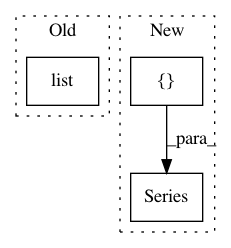

e88456edf02f285c13dd162f195e1e368f836789,jobs/guess_indicators_daily_job.py,,apply_guess,#Any#Any#,223
Before Change
stock_data_list.append(tmp_val)
// print(stock_data_list)
return list(stock_data_list)
// print(stock["mov_vol"].tail())
// print(stock["return"].tail())
After Change
stock = common.get_hist_data_cache(code, date_start, date_end)
// 设置返回数组。
stock_data_list = []
stock_name_list = []
// 增加空判断，如果是空返回 0 数据。
if stock is None:
for col in stock_column:
if col == "date":
stock_data_list.append(date)
stock_name_list.append("date")
elif col == "code":
stock_data_list.append(code)
stock_name_list.append("code")
else:
stock_data_list.append(0)
stock_name_list.append(col)
return pd.Series(stock_data_list, index=stock_name_list)
// print(stock.head())
// open high close low volume
// stock = pd.DataFrame({"close": stock["close"]}, index=stock.index.values)
stock = stock.sort_index(0) // 将数据按照日期排序下。
stock["date"] = stock.index.values // 增加日期列。
stock = stock.sort_index(0) // 将数据按照日期排序下。
// print(stock) [186 rows x 14 columns]
// 初始化统计类
// stockStat = stockstats.StockDataFrame.retype(pd.read_csv("002032.csv"))
stockStat = stockstats.StockDataFrame.retype(stock)
print("//////////////////////////////////////////////////// print result ////////////////////////////////////////////////////")
for col in stock_column:
if col == "date":
stock_data_list.append(date)
stock_name_list.append("date")
elif col == "code":
stock_data_list.append(code)
stock_name_list.append("code")
else:
// 将数据的最后一个返回。
tmp_val = stockStat[col].tail(1).values[0]
if np.isinf(tmp_val): // 解决值中存在INF问题。
tmp_val = 0
if np.isnan(tmp_val): // 解决值中存在NaN问题。
tmp_val = 0
// print("col name : ", col, tmp_val)
stock_data_list.append(tmp_val)
stock_name_list.append(col)
// print(stock_data_list)
return pd.Series(stock_data_list, index=stock_name_list)
// print(stock["mov_vol"].tail())
// print(stock["return"].tail())
In pattern: SUPERPATTERN
Frequency: 4
Non-data size: 3
Instances
Project Name: pythonstock/stock
Commit Name: e88456edf02f285c13dd162f195e1e368f836789
Time: 2018-08-16
Author: yhy363@yhy363.com
File Name: jobs/guess_indicators_daily_job.py
Class Name:
Method Name: apply_guess
Project Name: scikit-learn-contrib/categorical-encoding
Commit Name: b5034279b48ae96ffdd4714f96e0f62b0f4807fc
Time: 2018-10-26
Author: jcastaldo08@gmail.com
File Name: category_encoders/ordinal.py
Class Name: OrdinalEncoder
Method Name: ordinal_encoding
Project Name: pythonstock/stock
Commit Name: e88456edf02f285c13dd162f195e1e368f836789
Time: 2018-08-16
Author: yhy363@yhy363.com
File Name: jobs/guess_period_daily_job.py
Class Name:
Method Name: apply_guess
Project Name: pythonstock/stock
Commit Name: e88456edf02f285c13dd162f195e1e368f836789
Time: 2018-08-16
Author: yhy363@yhy363.com
File Name: jobs/guess_return_daily_job.py
Class Name:
Method Name: apply_guess